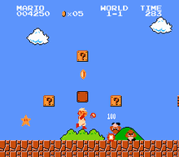
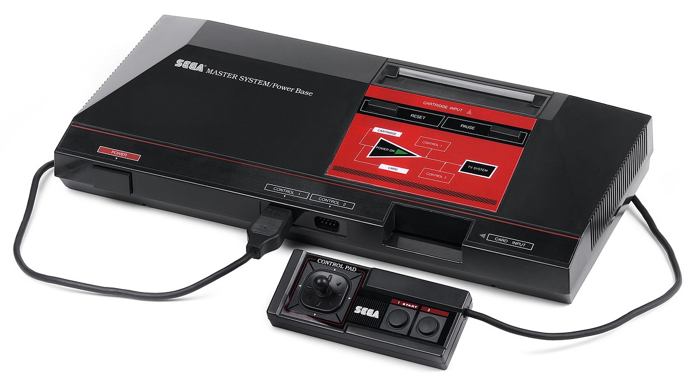
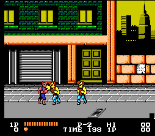
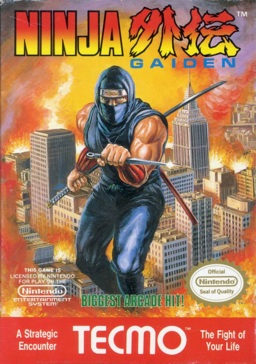

First Memories
One of my earliest memories is of being at my cousin's house and playing Nintendo. I can't recall just how old I was at the time but I must have been four or five. We played Super Mario Bros and I remember being dazzled by the sounds, colors, the movement, and excitement of the game. Of course at that age I couldn't analyze those feelings but all I knew is that I really had to have an NES. When it was time to go for the evening I remember crying and throwing a fit because I wanted to play more Nintendo (not my finest moment). It would be some time after that before I could enjoy a NES of my own but in the meantime my parents bought my brother and I a...
Enter The Sega Master System
So my parents ended up getting my brother and I a Sega Master System. For those unfamiliar, it was an 8-bit system developed by Sega that preceded the Sega Genesis. It was a fine console and my brother and I had fun with it. I remember playing the first Y's game. It was cool and mystifying but I didn't understand how rpgs worked at that young age(also, Y's had a peculiar combat system). I never got very far. Even though I had fun with Master System, I still envied everyone that had a Nintendo. Today, however, I wish I still had my original console.
My Gaming Glory Days
I remember the day my mother bought me an NES. She sold the Sega Master System and used the money to buy a used NES from a neighbor. I remember being excited that I finally had a Nintendo of my own. It came with several games of which I only remember Double Dragon.
Over the next couple years, I would get NES games for Christmas or birthdays and I started to amass a collection. I didn't have that many games but I had enough. Couple that with trips to the video rental store and I played quite a few NES games as a kid(when I grew up and started using the internet I discoverd TONS of NES games I hadn't played). My main gaming time came on Saturday mornings before and after Saturday morning cartoons. I played many games such as Ninja Gaiden, Ninja Gaiden II, Megaman II, The Legend of Zelda, and Contra just to name a few.
As awesome as playing nintendo was, I can't help but recall all the teeth clenching, rage inducing times I had with the NES. Playing NES games as an adult is hard enough, I don't know how I did it as a child(actually I do, but more on that a bit later). The Ninja Gaiden series was probably one of the worst offenders. I remember being absolutely defeated by that game, probably to the point of tears. I hate to admit it but throwing NES controllers wasn't unheard of for me when I was a child. In my early NES gaming days many games were played but not many games were completed. I bet my mom noticed some of this behavior or maybe I straight told her that my games were too hard because not too long after my 8th birthday I got a Game Genie! That made my gaming life a lot easier as a child.
It is cheating but I believe it was the only way I could actually beat games back then. It allowed me to play through many of my favorite games with out breaking controllers!
I had a lot of fun with the NES and by 1992 or 1993 I had moved on to the SNES. I still played NES games when I got newer consoles and I still play them to this day. I guess the NES holds a certain nostalgia for me that no other console does. These days I collect NES cartridges when I can find them for good prices which as of late is few and far between. The market for NES collecting has exploded in the last 10 years. In the early 2000's, many NES cartridges were dirt cheap and I kick myself for not buying them back then. Oh Well!
My Top Ten NES Games
(In No Particular Order)
- The Legend of Zelda
- Ninja Gaiden
- Mike Tyson's Punchout!!
- Super Mario Bros 3
- Contra
- Megaman II
- Metroid
- River City Ransom
- Maniac Mansion
- Dragon Warrior